Faites main
49 collections signées
Dessinées une à une, avec leur ouverture animée, leur musique, leur site, leur plan de table, leur mur photo et leur livre d'or.
À la une
À la une
 Signature · palace parisienGrand HôtelEnveloppe de coton au cachet de cire, lustre de cristal et guirlande de roses blanches
À la une
Signature · palace parisienGrand HôtelEnveloppe de coton au cachet de cire, lustre de cristal et guirlande de roses blanches
À la une
 Signature · Afrique de l’OuestHéritagePochette de kente tissé, fermoir d'or, wax et fleurs tropicales
À la une
Signature · Afrique de l’OuestHéritagePochette de kente tissé, fermoir d'or, wax et fleurs tropicales
À la une
 Intemporel · aquarelleMarineEnveloppe de papier coton aux vagues peintes, sceau coquillage, phare et voiliers à l'aquarelle
Intemporel · aquarelleMarineEnveloppe de papier coton aux vagues peintes, sceau coquillage, phare et voiliers à l'aquarelle
Signature · palace parisienGrand HôtelEnveloppe de coton au cachet de cire, lustre de cristal et guirlande de roses blanches
À la une
Signature · Afrique de l’OuestHéritagePochette de kente tissé, fermoir d'or, wax et fleurs tropicales
À la une
Intemporel · aquarelleMarineEnveloppe de papier coton aux vagues peintes, sceau coquillage, phare et voiliers à l'aquarelle
Héritages
 Lakou · maisons gingerbreadLakayPortes de maison gingerbread qui s'ouvrent, lettrage peint des tap-taps
Lakou · maisons gingerbreadLakayPortes de maison gingerbread qui s'ouvrent, lettrage peint des tap-taps
 Karabela · robe quadrilleKarabelaEnveloppe de chambray bordée de dentelle, fermée d'un hibiscus ; broderie anglaise et fleurs tropicales autour de la carte
Karabela · robe quadrilleKarabelaEnveloppe de chambray bordée de dentelle, fermée d'un hibiscus ; broderie anglaise et fleurs tropicales autour de la carte
 Madras · tèt maréMadrasCoiffe tèt maré qui se dénoue, photo dans une fenêtre de case créole
Madras · tèt maréMadrasCoiffe tèt maré qui se dénoue, photo dans une fenêtre de case créole
 Kente · symboles adinkraKenteBandes tissées qui s'ouvrent comme un métier, noir et or, symbole adinkra
Kente · symboles adinkraKenteBandes tissées qui s'ouvrent comme un métier, noir et or, symbole adinkra
 Aso-ebi · geleOwambeÉventail doré qui s'ouvre, couverture de magazine de mode
Aso-ebi · geleOwambeÉventail doré qui s'ouvre, couverture de magazine de mode
 Toghu · GrassfieldsToghuPans de toghu brodé qui glissent, médaillon royal, nuit et étoiles
Toghu · GrassfieldsToghuPans de toghu brodé qui glissent, médaillon royal, nuit et étoiles
 Grand boubou · bazinTerangaVoile de bazin blanc qui se lève, arabesques et filets dorés
Grand boubou · bazinTerangaVoile de bazin blanc qui se lève, arabesques et filets dorés
 La Sape · éléganceSapeÉtiquette de couture qui se retourne, catalogue de mode aux couleurs franches
La Sape · éléganceSapeÉtiquette de couture qui se retourne, catalogue de mode aux couleurs franches
 Pagne kita · tissage baouléKitaMosaïque de carreaux de pagne qui se retournent, grille de tuiles orange et noir
Pagne kita · tissage baouléKitaMosaïque de carreaux de pagne qui se retournent, grille de tuiles orange et noir
 Bogolanfini · terre et teinturesBogolanRouleau de tissu de boue qui se relève, parchemin et frises géométriques
Bogolanfini · terre et teinturesBogolanRouleau de tissu de boue qui se relève, parchemin et frises géométriques
 Habesha kemis · tibebTibebPans de coton blanc à bordures tissées qui s'écartent, croix en ornement
Habesha kemis · tibebTibebPans de coton blanc à bordures tissées qui s'écartent, croix en ornement
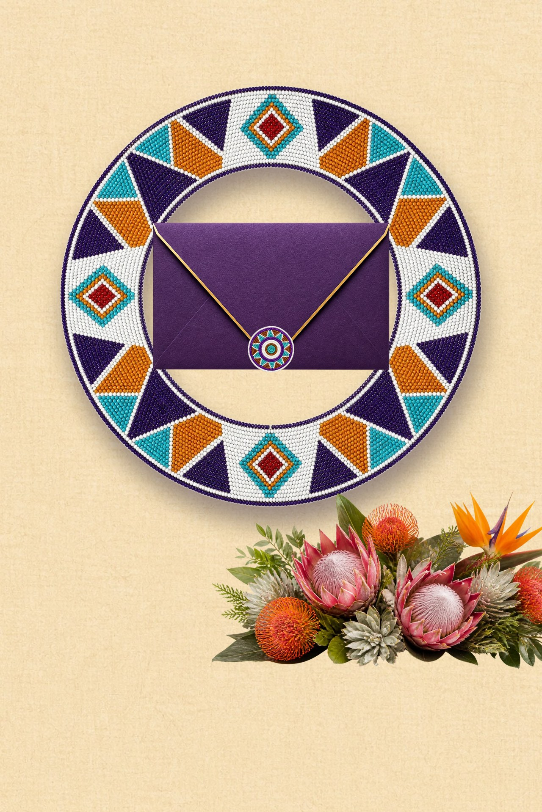
Perlage zoulou · umaboImbaliEnveloppe violette au sceau perlé, prénoms au cœur d'un collier de perles qui tourne lentement, protéas royales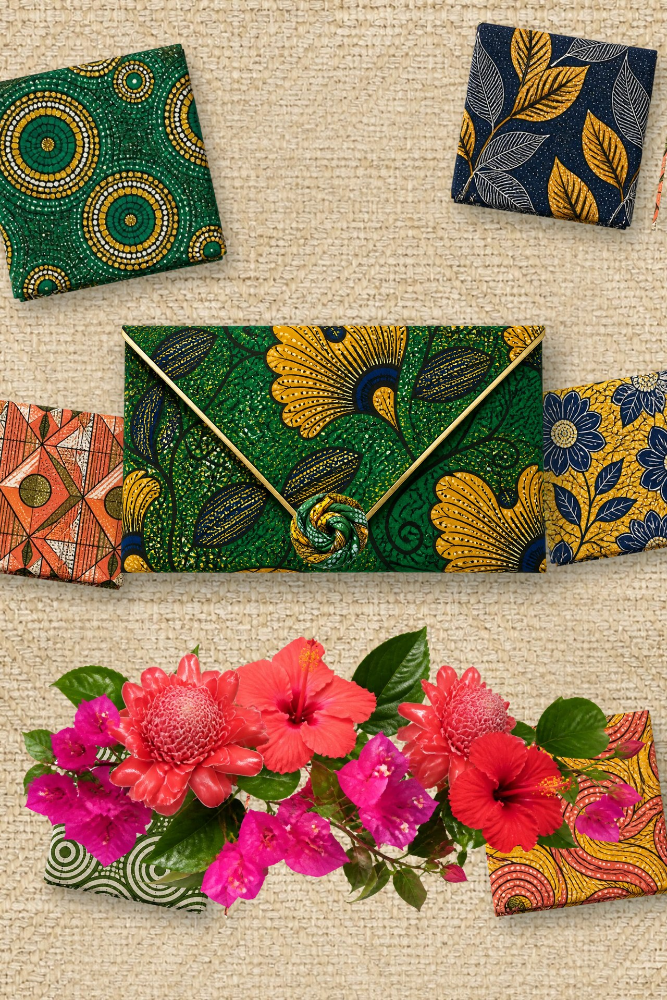
Liputa · pagne et rumbaLiputaEnveloppe en wax au nœud de pagne, échantillons de pagne qui flottent autour de la carte, roses de porcelaine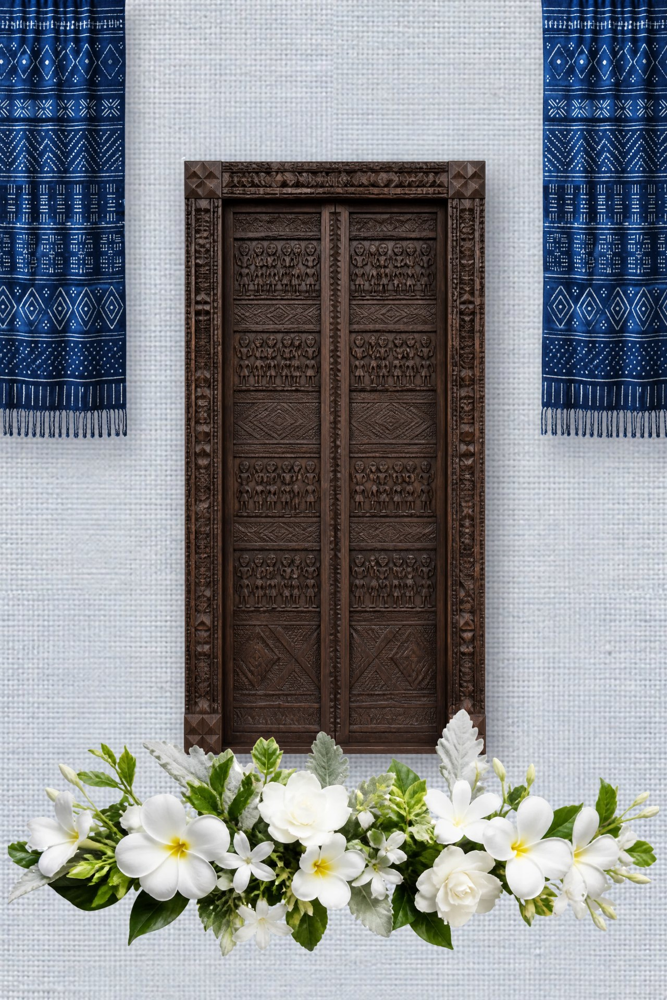
Ndop · indigo royalNdopPortes sculptées de chefferie, tentures d'indigo aux motifs blancs qui se balancent, fleurs blanches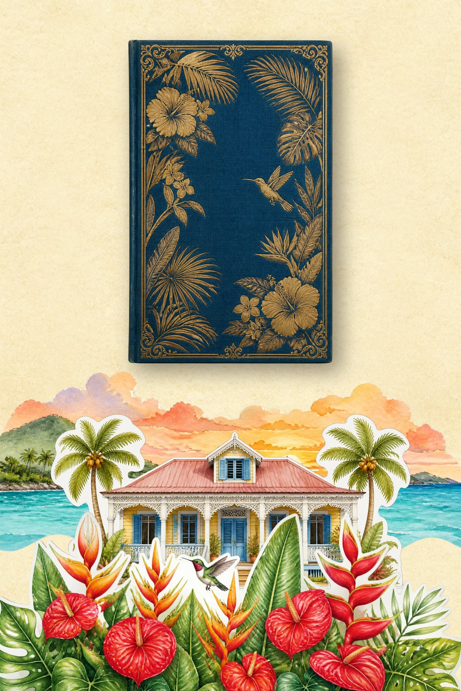
Kreyòl · « Krik ? Krak ! »KreyòlLivre de contes qui s'ouvre, case créole en papier qui se déplie comme un livre animé, anthuriums et colibri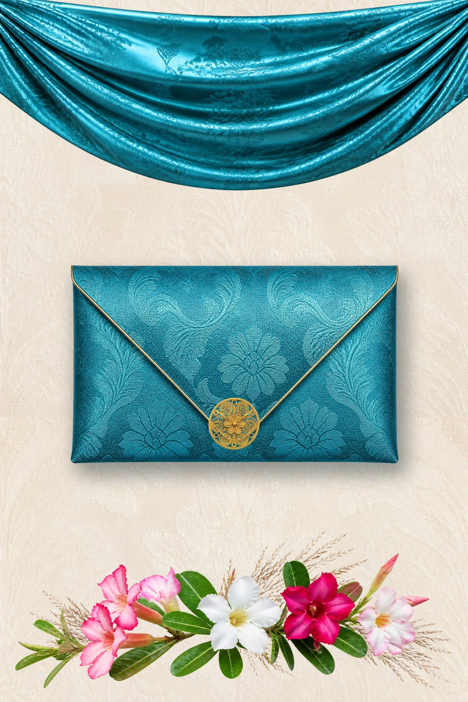
Bazin riche · grand boubouBazinEnveloppe de bazin turquoise au médaillon de filigrane d'or, drapé de bazin traversé d'un reflet de lumière, roses du désert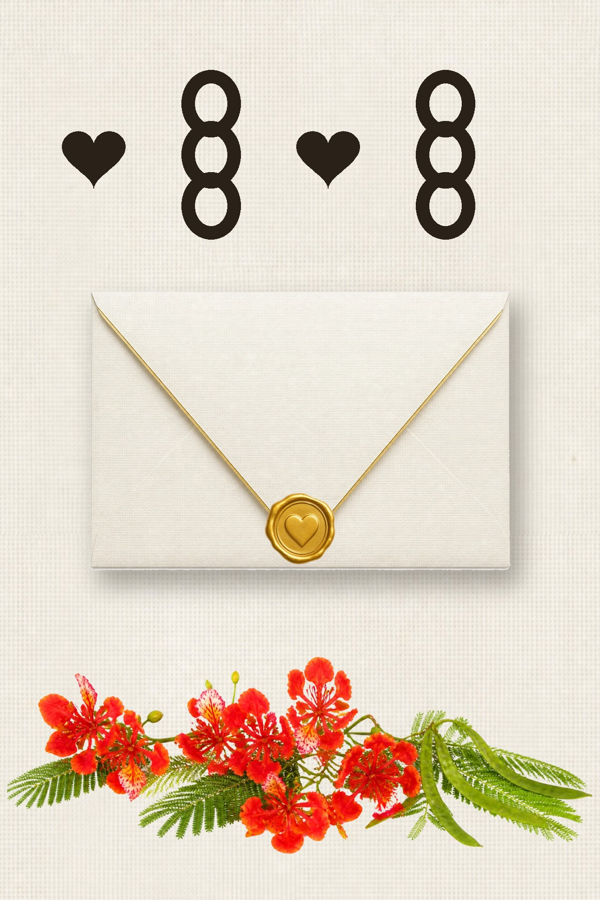
Adinkra · symboles akanAdinkraEnveloppe ivoire au sceau du cœur, symboles Akoma et Nkonsonkonson qui s'impriment comme au tampon, flamboyantsAsie
Qun kwa · cérémonie du théQun kwaEnveloppe de soie rouge brodée d'un phénix, nœud chinois ; dragon et phénix d'or face à face
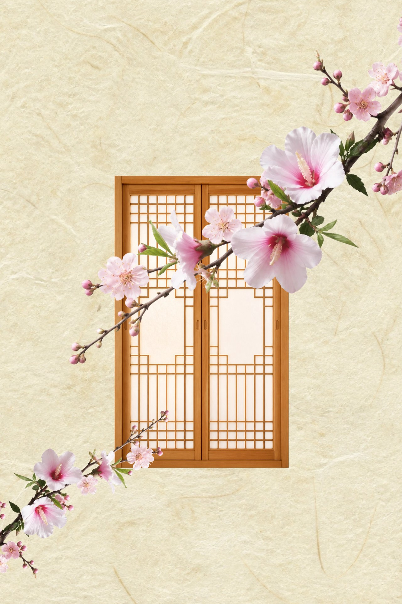
Hanbok · pyebaekHanbokPortes de hanok tendues de papier hanji, branche de prunier et de mugunghwa en diagonale, céladon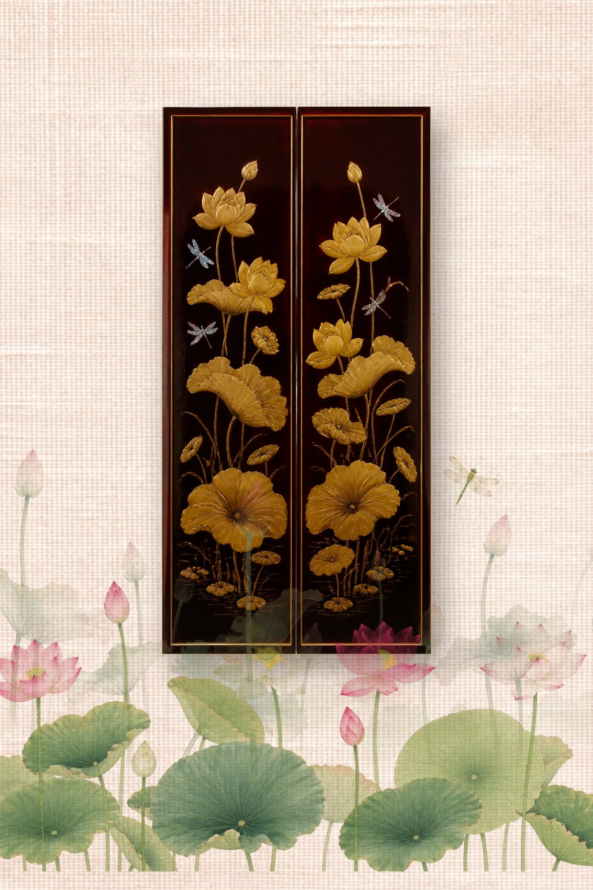
Áo dài · lotusÁo dàiPortes laquées à la feuille d'or, étang de lotus peint sur soie, libellule et reflet sur l'eau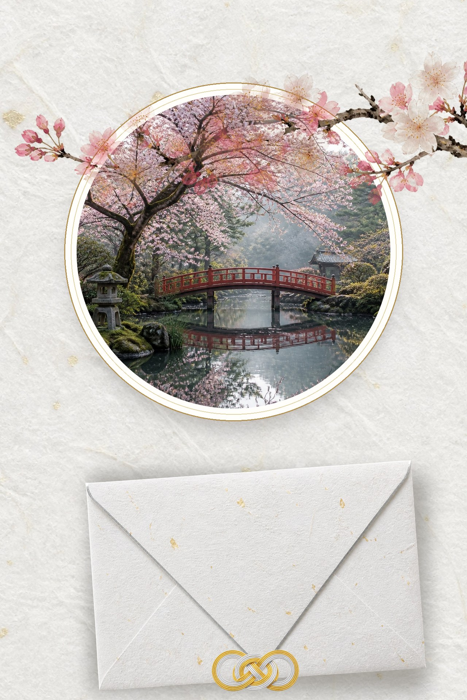
Shiromuku · cérémonie shintōShiromukuEnveloppe de washi au nœud de mizuhiki, fenêtre ronde ouverte sur un jardin de cerisiers, branche peinte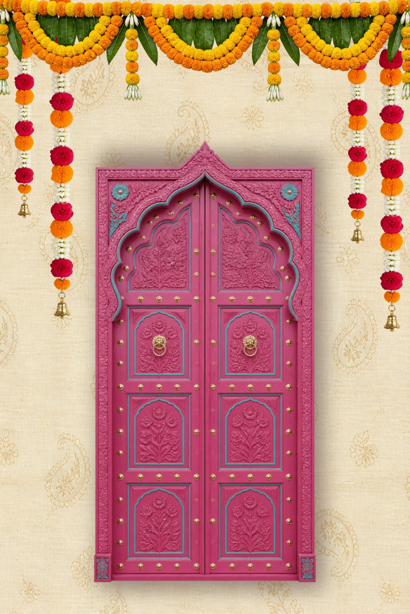
Lehenga · varmala et mandapLehengaPortes de haveli rose indien, toran d'œillets d'Inde et fils de jasmin qui se balancentIntemporels
 Classique · intemporelClassiqueEnveloppe ivoire au sceau de cire, monogramme et double filet doré
Classique · intemporelClassiqueEnveloppe ivoire au sceau de cire, monogramme et double filet doré
 Intemporel · royalVersaillesEnveloppe bleu poudré à bordure baroque et sceau du soleil
Intemporel · royalVersaillesEnveloppe bleu poudré à bordure baroque et sceau du soleil
 Intemporel · années follesGatsbyPortes laquées noir et or qui s'ouvrent, plumes, perles et jazz
Intemporel · années follesGatsbyPortes laquées noir et or qui s'ouvrent, plumes, perles et jazz
 Intemporel · grand soirOpéraRideau de velours rouge qui se lève, lustres de cristal et bal masqué
Intemporel · grand soirOpéraRideau de velours rouge qui se lève, lustres de cristal et bal masqué
 Intemporel · soirée précieuseÉmeraudeÉcrin de velours émeraude qui s'ouvre, orchidées blanches et or, sous une verrière
Intemporel · soirée précieuseÉmeraudeÉcrin de velours émeraude qui s'ouvre, orchidées blanches et or, sous une verrière
 Intemporel · vignobleBordeauxEnveloppe couleur de vin au sceau de la vigne, château et rangs d'automne
Intemporel · vignobleBordeauxEnveloppe couleur de vin au sceau de la vigne, château et rangs d'automne
 Intemporel · bord de merChapellePortes de chapelle qui s'ouvrent, arche de fleurs blanches et bleues, au-dessus des vagues
Intemporel · bord de merChapellePortes de chapelle qui s'ouvrent, arche de fleurs blanches et bleues, au-dessus des vagues
 Intemporel · ParisFaubourgPorte cochère laquée noire, toits de zinc au soleil couchant vus d'un balcon en fer forgé
Intemporel · ParisFaubourgPorte cochère laquée noire, toits de zinc au soleil couchant vus d'un balcon en fer forgé
 Intemporel · broderieIvoireVolets brodés de perles qui s'ouvrent, branches en relief dans les coins, papier gaufré
Intemporel · broderieIvoireVolets brodés de perles qui s'ouvrent, branches en relief dans les coins, papier gaufré
 Intemporel · faïencePorcelaineCabinet de porcelaine peint en bleu de cobalt qui s'ouvre, cartouche festonné autour des prénoms
Intemporel · faïencePorcelaineCabinet de porcelaine peint en bleu de cobalt qui s'ouvre, cartouche festonné autour des prénoms
 Intemporel · dessin à l’encreSoieParavent de soie peint à l'encre qui se déplie, glycine dessinée le long de la carte
Intemporel · dessin à l’encreSoieParavent de soie peint à l'encre qui se déplie, glycine dessinée le long de la carte
 Intemporel · papier découpéMonogrammePortail de papier ciselé, diorama de trois feuilles découpées, silhouettes et monogramme doré
Intemporel · papier découpéMonogrammePortail de papier ciselé, diorama de trois feuilles découpées, silhouettes et monogramme doré
 Intemporel · nuit au bord de l’eauLanternesEnveloppe bleu nuit semée d'étoiles d'or, lac à l'heure bleue et lanternes qui montent dans le ciel
Intemporel · nuit au bord de l’eauLanternesEnveloppe bleu nuit semée d'étoiles d'or, lac à l'heure bleue et lanternes qui montent dans le ciel
 Classique · bohèmeBohème chicHerbes de la pampa qui s'écartent, arches terre cuite, lumière de fin d'été
Classique · bohèmeBohème chicHerbes de la pampa qui s'écartent, arches terre cuite, lumière de fin d'été
 Classique · campagneChampêtreServiette de lin nouée d'un brin de lavande, polaroïd et fleurs des champs
Classique · campagneChampêtreServiette de lin nouée d'un brin de lavande, polaroïd et fleurs des champs
Anniversaires · Faites main
 Anniversaire chicGalaRideau de paillettes dorées qui tombe, chiffre monumental, noir et or
Anniversaire chicGalaRideau de paillettes dorées qui tombe, chiffre monumental, noir et or
 Anniversaire festifDiscoBoule à facettes qui s'illumine, titres en néon rose et bleu, piste en damier
Anniversaire festifDiscoBoule à facettes qui s'illumine, titres en néon rose et bleu, piste en damier
 Anniversaire en plein airTropicalFeuilles de monstera qui s'écartent, couleurs jungle et corail, carte des cocktails
Anniversaire en plein airTropicalFeuilles de monstera qui s'écartent, couleurs jungle et corail, carte des cocktails
Baptêmes · Faites main
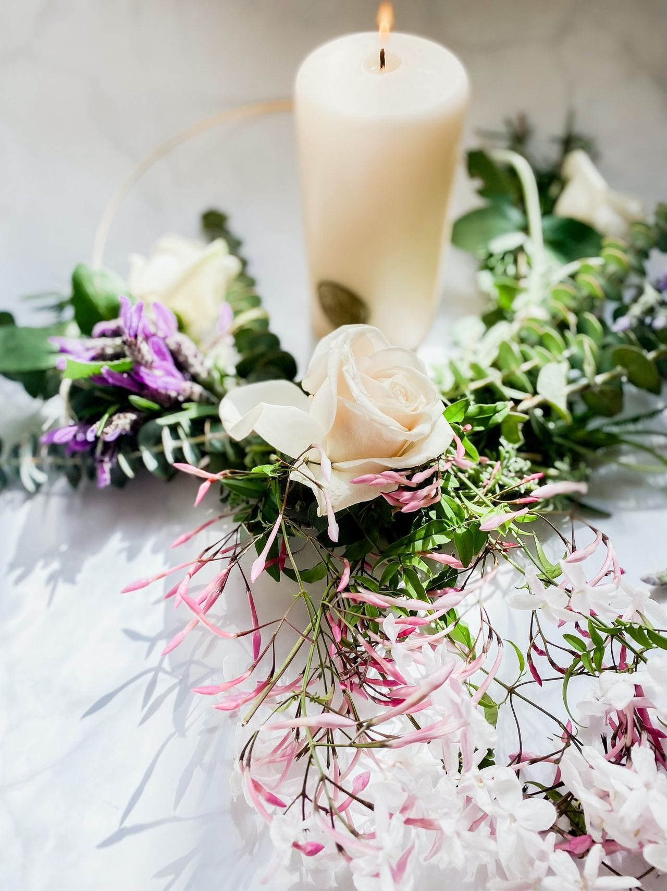
Baptême sobreLumièreCierge qui s'allume et inonde l'écran de lumière, rameaux d'olivier, blanc et or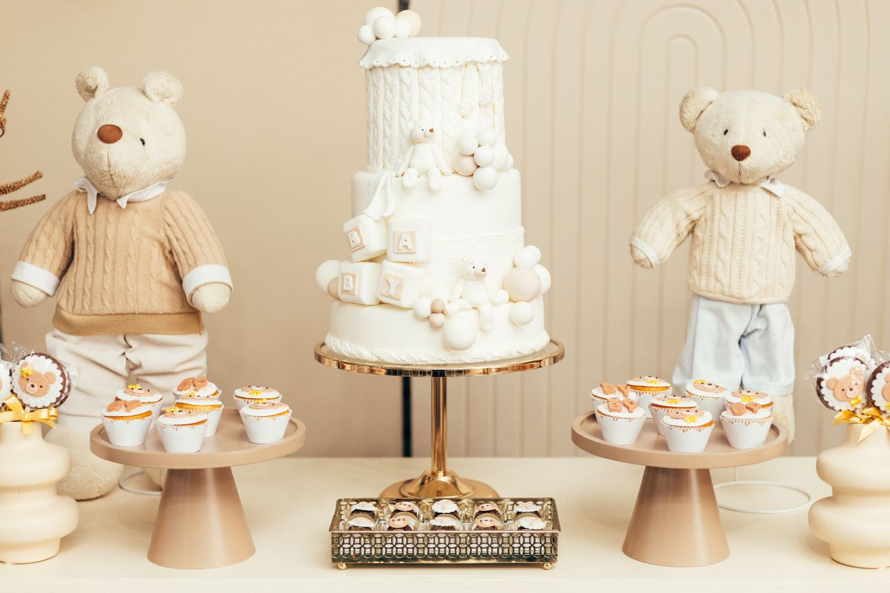
BaptêmeNuageNuages qui s'écartent sur un ciel bleu, colombe, douceur pastel BaptêmePetite étoileNuit étoilée et croissant de lune, la nuit devient aube, bleu nuit et orGender reveal · Faites main
 Gender revealSurpriseBallon à éclater, vote des invités, révélation à gratter avec confettis
Gender revealSurpriseBallon à éclater, vote des invités, révélation à gratter avec confettis
 Gender revealBoîte à ballonsBoîte cadeau dont le couvercle se soulève, ballons rose et bleu qui s'envolent, jauge des pronostics
Gender revealBoîte à ballonsBoîte cadeau dont le couvercle se soulève, ballons rose et bleu qui s'envolent, jauge des pronostics
 Gender revealTop secretDossier kraft tamponné « confidentiel », rapport tapé à la machine, passages caviardés à toucher
Gender revealTop secretDossier kraft tamponné « confidentiel », rapport tapé à la machine, passages caviardés à toucher
Directions artistiques
84 directions personnalisables
Chacune a sa propre structure : la composition de la couverture, la présentation du programme, le rythme des parties. Toutes existent en faire-part, en save-the-date et en site ; couleurs, polices, photo et parties se changent ensuite dans votre espace, avec un aperçu en direct.